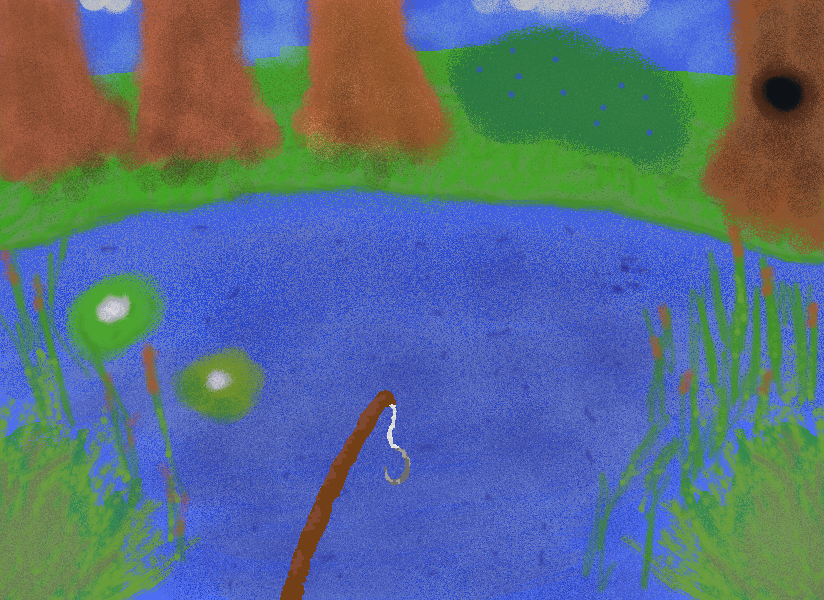
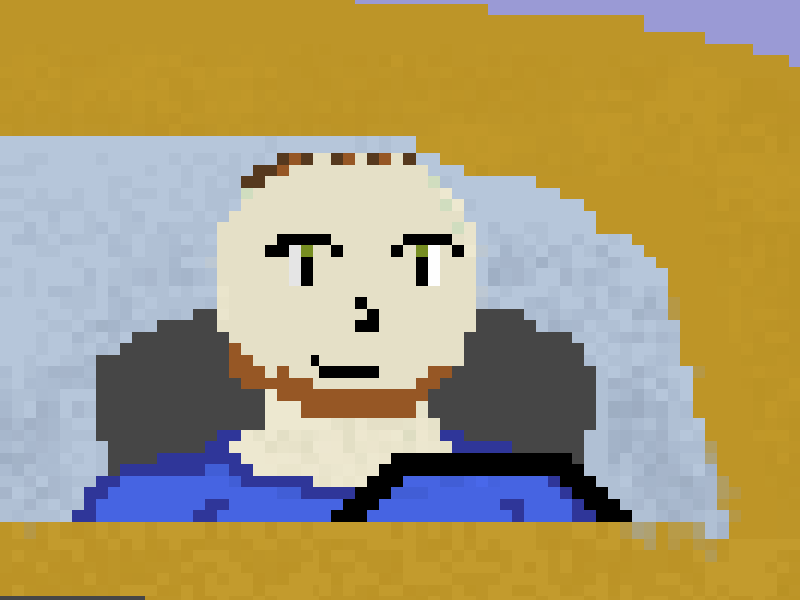
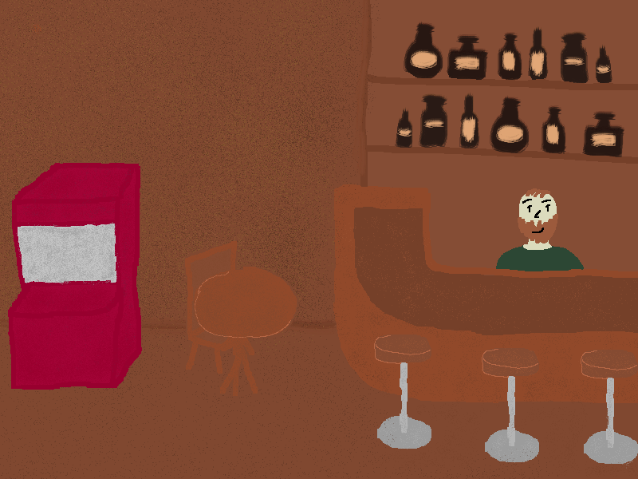
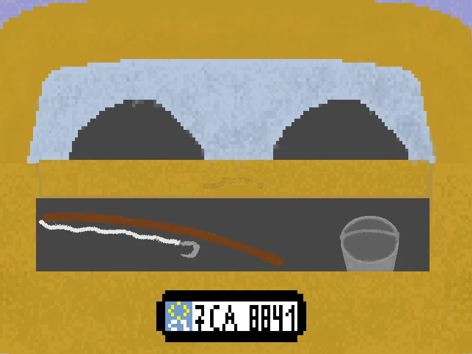
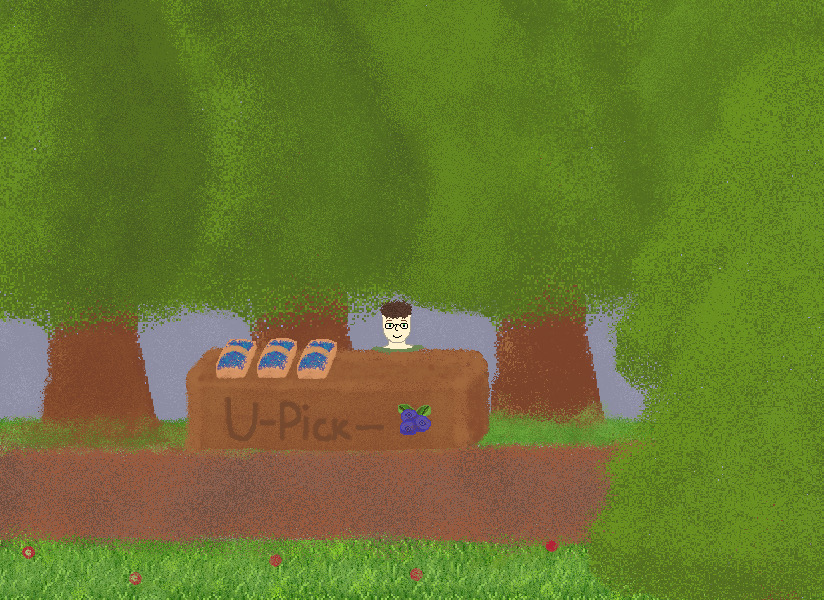
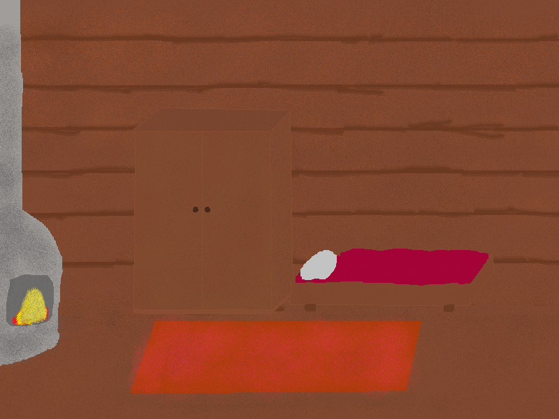

Josef má rozbité auto uprostřed letní dovolené. Jediná cesta domů vede přes jezero, prut a pořádnou trpělivost — vyraž s ním rybařit, sbírat borůvky a poznávat lidi kolem jezera.
💻 Windows · zdarma · MIT licence

o hře
Hrajete za Josefa, kterému se na cestě za letním dobrodružstvím porouchalo auto. Aby se dostal domů, musí si vydělat dost mincí — a k tomu vede jediná cesta: k jezeru, s prutem v ruce.
Mezi hozením návnady a čekáním na záběr proteče spousta času — na sběr borůvek, povídání s místními a starost o to, aby Josef nebyl hladový, žíznivý ani unavený. Klidná hra o tom, že i porouchané auto může být začátek dobrého léta.

Přijíždí na letní výlet s autem, které ho nechalo na holičkách. Trpělivý, mírně nešikovný, ale odhodlaný ulovit si cestu domů — jednu rybu, jednu borůvku a jednu minci po druhé.
z deníku hry




herní smyčka
Celý den se točí kolem tří věcí: chytat ryby, prodávat úlovky a z výdělku si ulehčovat další rybaření.
Nastupte na loď, vyberte návnadu, hoďte prut a naklikejte písmena, než vám ryba upluje.
Inventář na úlovky a návnady. Nasazujte a sundávejte návnady, sledujte upgrady.
Prodejte ryby za mince, kupte si vylepšení prutu i zásoby návnad na příště.
Hlad, žízeň a smutek ovlivňují, jak rychle a snadno se rybaří. Udržujte ho v pohodě.
ovládání
pohyb do stran
interakce, nastupování na loď
nahození prutu
klikání zobrazených písmen při záběru ryby
klik na kbelík otevře inventář
ulož si hru — jdi spát do postele v chatce
Postupně klesá. Doplníte ho u stánku s jídlem u garáže — čím větší hlad, tím déle čekáte na záběr.
Klesá s časem, doplníte ji v baru. Žíznivý Josef se po mapě pohybuje pomaleji.
Roste, když jsou hlad a žízeň nízko. Odpočinek u krbu ji sníží — čím vyšší psychika, tím víc písmen musíte při rybaření naklikat.
poslední zastávka
Vezmi prut, vyraž k jezeru a vydělej si cestu domů — jedna ryba po druhé.